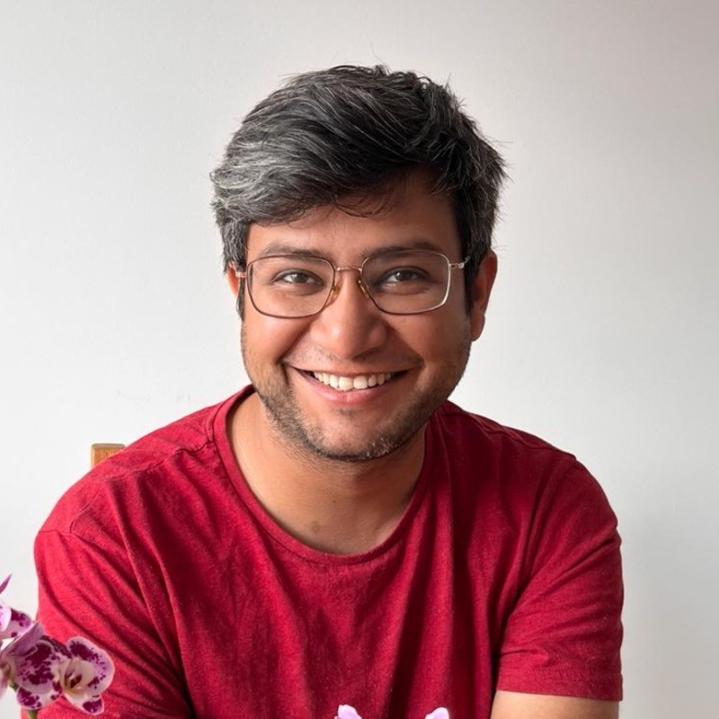

Building AI that actually ships.
I work on medical imaging, foundation models, and production ML — PhD from the University of Copenhagen, Visiting Researcher at the Martinos Center (Harvard/MIT), and writing weekly for ~18,000 readers at Towards Deep Learning.

Research, industry, and writing — across Denmark, Taiwan, and Boston.
Translating complex ML research into clear, practitioner-friendly tutorials. Built and maintain a global community of ~120 paying subscribers on top of the free readership.
Co-developed Zero-MED-YOLO, a no-code medical imaging tool that cut preprocessing and model training prep from 3–4 hours to 2–3 minutes by fully automating the pipeline.
Built automated preprocessing for images and tabular data — skull-stripping, registration, quality control. Designed and implemented the MED-YOLO project for 2D/3D segmentation on sparse datasets.
Led the Deep Consciousness project in partnership with Rigshospitalet, developing predictive models for comatose patient outcomes using serial CT imaging. Improved survival prediction from AUROC 0.75 → 0.82, or 0.95 when fused with Glasgow Coma Scale.
Established a collaboration with Chang Gung Memorial Hospital (Taiwan) on automated point-of-care ultrasound aorta segmentation. Managed large hospital datasets on HPC clusters; applied classical survival and regression analysis alongside deep learning.
Cancer segmentation on MRI using CNN, GAN, and U-Net architectures — published in European Radiology (IF 4.7). Led design of a deep learning course for hospital residents, bridging AI and clinical practice.
Work that shipped, with measurable outcomes.
Deep Consciousness
Predictive models for comatose patient outcomes using time-series CT imaging. A collaboration with Rigshospitalet Copenhagen.
Zero-MED-YOLO
A no-code medical image analysis tool with fully automated preprocessing, training, and evaluation pipelines.
GPT-4 Customer Analysis
Automated sentiment and classification system for customer feedback, with a GDPR-compliant deployment pipeline.
Predictive Maintenance
Hemodialysis machine maintenance optimisation using genetic algorithms, Weibull analysis, and root-cause modelling.
Peer-reviewed work in imaging, computer vision, and fluid dynamics.
Let's build something honest and useful.
Open to full-time roles, consulting, and research collaboration — particularly in healthcare AI, foundation models, and production ML.